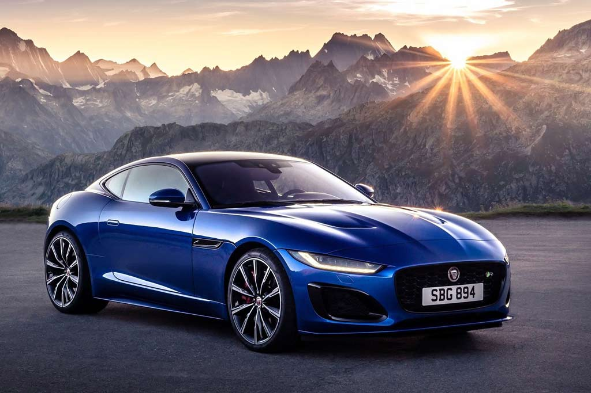

Jaguar
ГлавнаяJaguar F-Type — двухместный родстер от Jaguar Cars, который поступил в продажу в 2013 году. Является преемником одного из самых популярных спорткаров прошлого века — Jaguar E-Type. В течение разработки конкурента таких знаменитых родстеров, как Mercedes-Benz SLK-класс и BMW Z4 носил имя X152. Также есть купе и полноприводная версии автомобиля, а в будущем должна появиться гибридная модификация. Продажи начались в мае 2013 года в Великобритании по цене 58500 — 79950 £. За несколько недель продаж фирма распродала половину планируемого годового объёма
Характеристики
Кузов
F-Type построен на укороченной платформе последнего поколения Jaguar XK. Пространственный кузов полностью состоит из алюминиевого сплава AC300 и весит всего 261 кг. Технология его изготовки, применяемая также на Range Rover Evoque, позволяет снизить энергозатраты на 75 %, повысить жесткость кузова примерно на 30 %, а также снизить уровень шума и вибраций, который снижены также из-за двойной перегородки двигателя и специальной прокладки между кузовом и подвеской. Матерчатая крыша с алюминиевым каркасом имеет электропривод, позволяющий складывать её за 12 секунд на скорости до 50 км/ч. По оценкам Jaguar, мягкий верх не только позволяет снизить массу автомобиля (которая и так довольно большая), но и центр масс, плюс увеличить тепло- и шумоизоляцию по сравнению с твёрдой крышей.
Силовые установки и подвеска
На выбор покупателя 3 суперчарджер бензиновых двигателя — 3-литровый V6 с мощностью 335 или 375 (S) лошадиных сил, либо 5-литровый V8, развивающий 495 лошадиных сил (V8S). Все они агрегатируются 8-ступенчатой автоматической коробкой передач Quickshift, однако имеют разные передаточные числа. Версии S и V8S имеют соответственно самоблок повышенного трения и дифференциал, блокируемый при помощи фрикционной муфты. Также их легко различить по выхлопной трубе — у V6 сдвоенные патрубки посередине, а у V8 — по бокам.
Интерьер и оснащение
Интерьер F-Type имеет много интересных решений, таких как выезжающие из консоли дефлекторы обдува, поручень, визуально разделяющий переднюю часть салона на 2 части. Автомобиль не лишён таких деталей, как сенсорный 6,8-дюймовый дисплей, мультифункциональный трёхспицевый руль, отделанный чёрной алькантарой и урезанный снизу у S-версий, кожаный салон, мультимедиа система Meridian мощностью 380 Вт с 10 динамиками или 770 Вт и с 12 динамиками и тд.
Также F-Type оснащается системой «старт-стоп», снижающей расход топлива на 5 %, биксеноновыми фарами у базовой версии и светодиодными у старших, активной выхлопной системой, системой распознавания поворотов Corner Recognition, которая держит выбранную передачу до завершения поворота, выдвижные спойлер (из композитного материала, выдвигается на скорости 96 км/ч, убирается на 64 км/ч и увеличивает прижимную силу на 120 кг) и дверные ручки и др. Багажник, объём которого не зависит от положения крыши, сконфигурирован под сумку для гольфа или объём нескольких чемоданов разного размера.
